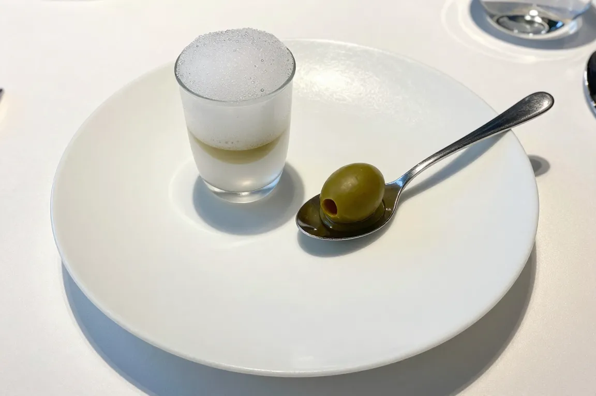

Et kjøkken som bruker matvitenskap som verktøy og lek. Hervé This og Nicholas Kurti ga feltet navn i 1988. Ferran Adrià på elBulli og Heston Blumenthal på The Fat Duck lagde skum, kuler og iskrem med flytende nitrogen.

Kjerneidé
Kokker kan spørre hvorfor mat endrer seg når den varmes, blandes eller fryses, og så bruke svaret til å bygge nye teksturer, temperaturer og overraskelser.
Designprinsipper
Still et fysisk eller kjemisk spørsmål om en rett, test det på kjøkkenet og behold svaret.
Endre formen på ingrediensen: en væske blir en kule, en puré blir et skum, en krem blir et pulver.
Hold smaken av ingrediensen klar mens tekstur og temperatur endres.
Lek med sansene: server varmt og kaldt i én munnfull, og legg til lyd, lukt eller en historie i retten.
Tilbered sakte ved en nøyaktig lav temperatur, og mål varmen med en føler.
Server en lang rekke små retter som én forestilling, med hver rett som en ny overraskelse.
Arbeid på et forskningskjøkken, før hver test og del funnene.
Antimønstre
Et triks uten smak av ingrediensen
En tung klassisk saus som skjuler teksturen
En rett som kommer av vane, ikke av et spørsmål
En meny av kjente retter i vanlig rekkefølge
En rustikk tallerken som skjuler teknikken
En kjemisk effekt som gjesten verken kan se eller smake